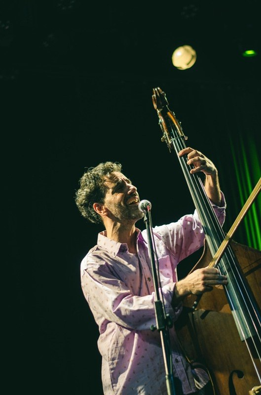

Marcos Cifuentes
Contrabajismos
Contrabajo y voz, solo en el escenario. Canciones propias y versiones que nacen del instrumento.
Biografía
Reconocido como personalidad destacada de la cultura de Berazategui, su ciudad. Fue miembro fundador de la Orquesta Académica del Teatro Colón. Su primer disco, Canciones de Contrabando, fue seleccionado como disco del mes por el Club del Disco de Buenos Aires.
También en trío
Marimba, contrabajo, percusión y voces, con César Martinini y Mauro Caracotche.
Agenda
Pronto nuevas fechas.
Contacto
Ciclos, salas, centros culturales y encuentros íntimos.
Contrabajismos · Marcos Cifuentes